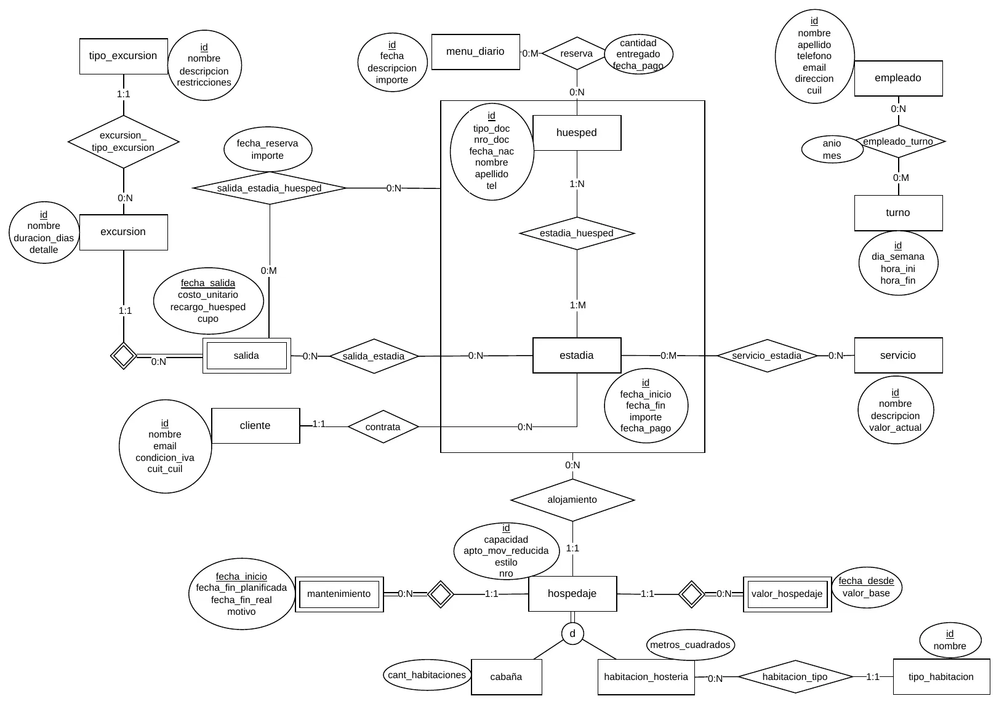
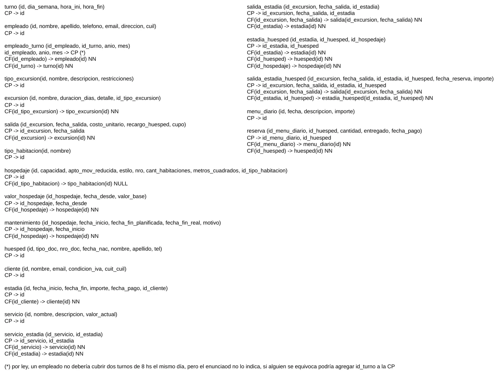

Jusenkyo Onsen Resort
1° parcial, 06/06/2026
Enunciado
Evaluación de Modelos de Datos
Modelos de Datos
- a) (5 puntos) Esquematice el modelo E-R que se deriva de la narrativa.
- b) (5 puntos) Transforme el modelo E-R en un Modelo Relacional (pasaje a tablas), indicando los atributos de cada tabla indicando aquellas que, indique las claves primarias y foráneas, en estas últimas indique, cuando se requiera, si admiten o no valores nulos.
El complejo turístico Jusenkyo Onsen tiene 40 años ofreciendo hospedaje para particulares y agencias de turismo ofreciendo además diversos servicios, excursiones y menúes. Pero el volumen de trabajo ha alcanzado un punto donde ha decidido informatizar su operatoria.
Hospedaje y estadía
Cuando un cliente1 desea alojarse en el complejo se contacta con Jusenkyo Onsen e indica la cantidad de huéspedes, las fechas y el hospedaje2 que desea (cabaña o habitaciones). Entonces se busca la disponibilidad en los distintos hospedajes. Si hay capacidad suficiente se registra la estadía7, se registran los huéspedes8 para dicha estadía. Para cada huésped de una estadía se asignan entonces una habitación o cabaña, que no esté en mantenimiento6 para esas fechas, donde va alojarse9.
Excursiones y salidas
Al momento de contratar la estadía el cliente puede decidir incluir salidas12 a excursiones10 y servicios14 que podrán ser realizados y utilizados por todos los huéspedes de la estadía.
Durante la estadía cualquier huésped puede contratar13 una salida a una excursión y se deberá registrar cual salida es contratada por qué huésped y la estadía a la que corresponde.
Menues diarios
Jusenkyo Onsen también ofrece un servicio de menúes diarios15 para los huéspedes de una estadía. La empresa publica los menúes unos días por adelantado para que los huéspedes puedan reservar16 la cantidad que deseen. Llegado el día la empresa sólo fabrica los menúes que hayan sido reservados.
Turnos y empleados
Jusenkyo Onsen cuenta con empleados17 para atender el complejo las 24 hs. Por lo tanto es necesario determinar qué personal trabaja en cada turno18 de cada día. Cerca de fin de mes el gerente carga para el mes siguiente qué empleados son asignados a trabajar19 en cada turno.
Pagos
En la primera etapa del sistema la empresa no quiere esperar a contar con un sistema de pago completo, en esta primer etapa solo desea poder registrar las fechas de pago de las estadías y menúes.
Reglas de Negocio
- Los clientes se identifican con un número de cliente único y secuencial generado automáticamente, de ellos se registra además nombre, apellido, email, condición frente a iva y cuit o cuil. Los clientes que normalmente contratan pueden ser personas que desean contratar directamente con el complejo para ellos o para otros; agencias de viaje/turismo que organizan viajes o gestionan las vacaciones para sus clientes; empresas que realizan un retiro corporativo. Para Jusenkyo Onsen no tiene diferencia pero si deben registrar la condición frente a iva (consumidor final, responsable inscripto, no responsable, exento, monotributista) para la emisión de la factura. Es importante destacar que un cliente no necesariamente será un huésped por lo que la empresa registra los clientes de forma independiente de los huéspedes, solo para la facturación y si fuera además un huésped lo registrará de nuevo como tal.
- El hospedaje puede ser de dos estilos: cabaña3 o habitación de hostería4. Todos se identifican con un mismo id que es un número único y secuencial generado automáticamente y se registra capacidad, si es apto para movilidad reducida, el estilo y un número (que no es único, hay cabañas 1 a 10 y habitaciones 1 a 30). Los hospedajes también tienen un valor base. El mismo puede variar con el tiempo por lo que interesa registrar el valor a lo largo del tiempo.
- De las cabañas se registra además la cantidad de habitaciones.
- De las habitaciones de hostería se registran los metros cuadrados y el tipo de habitación5 . Una habitación tiene un único tipo pero muchas habitaciones son del mismo tipo.
- Los tipos de habitación se identifican con un id numérico único y secuencial generado automáticamente y tienen un nombre.
- Cuando un hospedaje tiene algún desperfecto o inconveniente se debe realizar un mantenimiento. Para evitar que estos afecten el negocio, los mantenimientos de cada hospedaje se programan. De los mismos se registra a qué hospedaje corresponde, la fecha de inicio, la fecha de fin planificada, el motivo y cuando se termina la fecha
de fin real. Cuando se realiza un mantenimiento el hospedaje no se utiliza en todo el día con lo cual no hay necesidad de definir 2 mantenimientos en una misma fecha para el mismo hospedaje.
- Las estadías se identifican con un id numérico único y secuencial generado automáticamente, de las mismas se registra el cliente1, la fecha de inicio, la fecha de fin y el importe acordado y los huéspedes8. Una estadía puede tener 1 o más huéspedes. Una vez pagada se registra la fecha de pago de la misma.
- Los huéspedes son las personas que se hospedarán durante la estadía. Se identifican con un id numérico único y secuencial generado automáticamente y se registra tipo y número de documento, fecha de nacimiento, nombre y apellido y teléfono si lo tiene. Si un huésped ya estaba registrado se utilizan los datos registrados previamente y solo se registra un nuevo huésped cuando el mismo no había sido registrado antes por lo que un huésped puede asociarse a muchas estadías.
- Para cada huésped de una estadía se asigna un hospedaje para su alojamiento. Cada huésped de una estadía tiene un único hospedaje para esa estadía pero como los lugares de hospedaje son cabañas o habitaciones con distinta capacidad varios huéspedes de la misma estadía pueden usar el mismo hospedaje. La asignación la realiza la empresa según las indicaciones del cliente.
- Jusenkyo Onsen ofrece excursiones. Las mismas se identifican con un id numérico único y secuencial generado automáticamente, de ellas se registra nombre, días de duración, un detalle y el tipo de excursión11, una excursión es de un único tipo pero puede haber muchas excursiones de un tipo. Estas excursiones son genéricas para poder ofrecerlas, periódicamente para estas excursiones o cuando la empresa lo crea conveniente organiza una salidas12 de las excursiones.
- Los tipos de excursión se identifican con un id numérico único y secuencial generado automáticamente y tienen un nombre, descripción y restricciones de salud para los participantes.
- Cada salida pertenece a una única excursión, son las fechas en donde la empresa organiza para realizar una excursión, las mismas se pueden contratar al mismo tiempo que se contrata la estadía pero en caso de no hacerlo un huésped podrá contratarlas más adelante pero suele tener recargo. De las mismas se registra fecha de salida, costo unitario para contratar durante la estadía, un importe de recargo para cuando la contrata el huésped y el cupo máximo de participantes. Una excursión puede tener muchas salidas. Pero para una excursión en una fecha existe una única salida. Cuando se contrata una salida se debe registrar la estadía para la que se contrata y se asume que todos los huéspedes podrán realizarla. Una salida puede ser contratada en varias estadías y para una estadía pueden contratarse múltiples salidas.
- Durante la estadía si un huésped desea contratar una salida se debe registrar la salida; el huésped y la estadía a la que corresponde; la fecha de reserva y cuando abona el costo se debe registrar la fecha de pago y el importe final abonado. Un huésped puede contratar múltiples salidas y una salida puede contratarse por muchos huéspedes mientras tenga cupo.
- Jusenkyo Onsen ofrece servicios durante la estadía (media pensión, pensión completa, spa, etc). Los mismos pueden ser contratados para una estadía y todos los huéspedes podrán utilizar esos servicios. Los servicios se identifican con un id numérico único y secuencial generado automáticamente y tienen un nombre, descripción y valor actual que se utiliza para definir el importe total de la estadía. Para una estadía se pueden contratar muchos servicios y un servicio puede ser contratado en muchas estadías.
- Cada día la empresa publica a los huéspedes los menúes de los próximos días. Cada día puede tener varios menúes algunos para comer en el comedor de la hostería y cabañas, otros para llevar a las excursiones u otras actividades. Los menúes se identifican con un id numérico único y secuencial generado automáticamente, se debe registrar la fecha en la que se ofrecen (los menúes tienen una sola fecha en la que se ofrecen, aunque se utilice la misma receta para otro día se lo considera otro menú), cuentan con una descripción y un importe.
- Cuando un huésped desea reservar un menú se registra el huésped, el menú, la cantidad que desea. Cuando el huésped lo abona se registra la fecha de pago y cuando el huésped lo retira se registra la que fue entregado. Un huésped puede reservar muchos menúes y un menú puede ser reservado por muchos huéspedes ya que la reserva se debe realizar por anticipado y la cocina solo confecciona la cantidad total reservada.
- Los empleados de la empresa se identifican con un id numérico único y secuencial generado automáticamente. De ellos se registra nombre, apellido, teléfono, email, dirección y cuil.
- Los turnos se identifican con un id numérico único y secuencial generado automáticamente. Los mismos se definen para 1 día de la semana y un horario de inicio y de fin. Por ejemplo: Lunes de 16 a 24, Martes de 8 a 16.
- Los últimos días de cada mes la gerencia asigna para el mes siguiente los empleados que trabajarán en cada turno. Se registra para cada turno, los empleados y el mes que se está gestionando. Muchos empleados cubren un turno y un empleado puede trabajar en varios turnos.
Resolución
Ver la resolución: DER y pasaje a tablas
Son las hojas originales. Tocá una para verla en grande.




¿Cómo te fue?
Marcá cada tema del examen.
- DERDe la narrativa al DER, en 1° parcial
- PasajePasaje a tablas, en 1° parcial